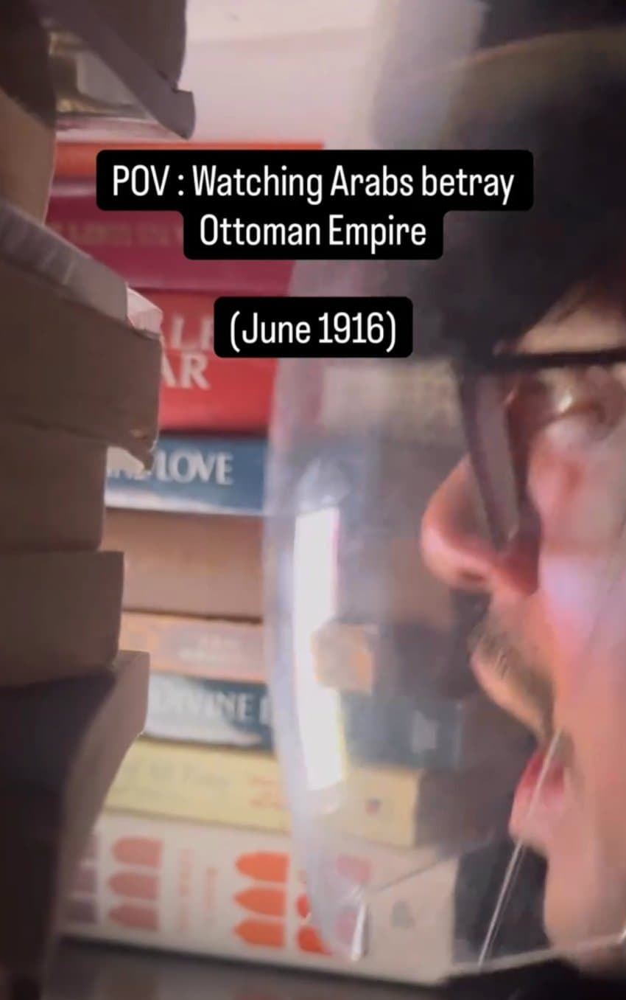
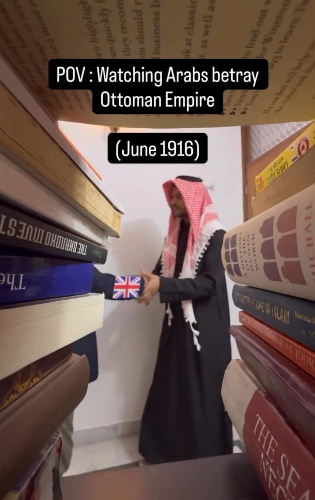
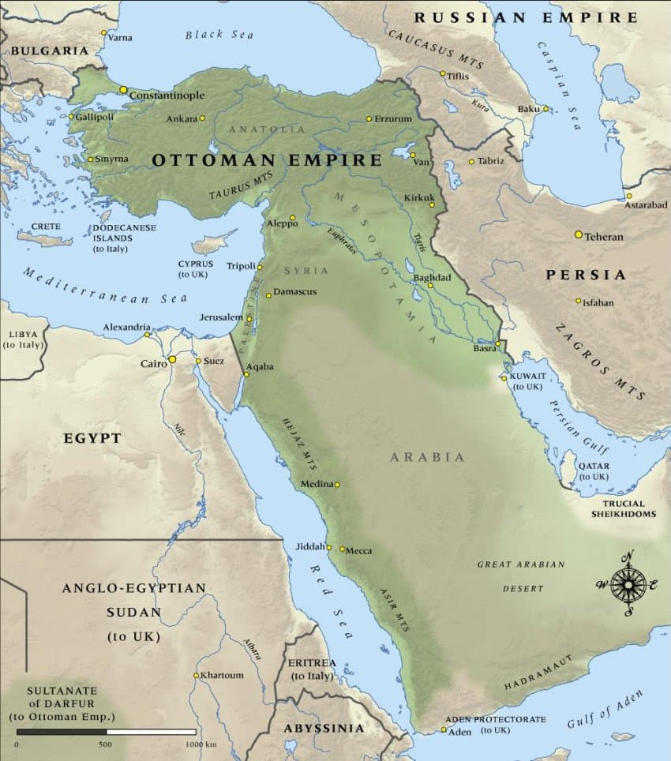
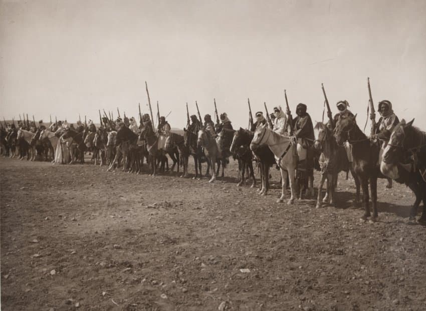
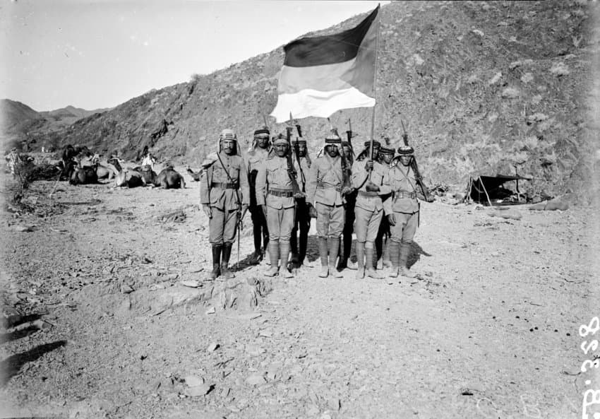
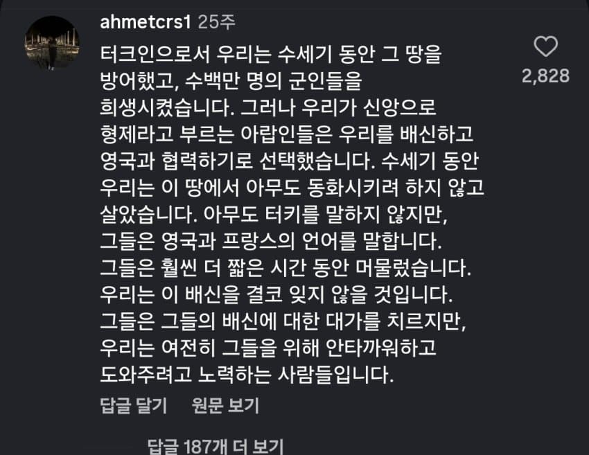
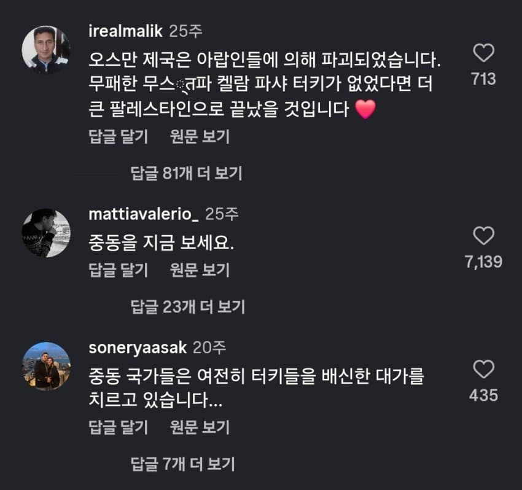
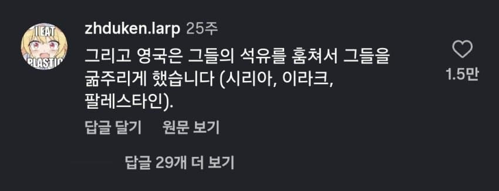

1차 세계대전 때 아랍이 영국과 손을 잡고 오스만 제국에 반란을 일으켰기 때문...

(1914년 오스만 제국 지도)


오스만 제국에 대항해 반란을 일으킨 아랍 부족들은
전후에 영국을 비롯한 협상국의 통수를 맞고 식민지와 보호령으로 전락했고
영국은 중동에 유대 국가를 세우게하는 선언을 하며 오늘날 중동 분쟁의 씨앗을 제공하긴했음....
다만 오스만 제국이 아랍 부족들을 가혹하게 탄압해 반란의 빌미를 제공했기 때문에 큰소리칠 입장은 아니지만..



지금도 튀르키예 사람들은
"아랍 놈들이 오스만을 배신하고 영국에 부역한 결과 = 좆스라엘 건국, 중동 평화 파괴, 식민지화"
"오스만 시절 때는 이런일이 없었는디..."
이렇게 한탄하며 아랍인들을 몹시 원망하고 있다고함
댓글
수집 당시 댓글 188개
· ㅇㅇ · 11.11 05:45:44
· ㅇㅇ · 11.11 10:12:05
ㅇㅇ · 11.11 01:07:06
ㅇㅇ · 11.11 01:08:11
· ㅇㅇ · 11.11 10:13:12
ㅇㅇ · 11.11 01:08:12
ㅇㅇ · 11.11 01:08:31
ㅇㅇ · 11.11 01:13:11
ㅇㅇ · 11.11 01:14:12
기승전 대령제국
ㅇㅇ · 11.11 01:31:07
ㅇㅇ · 11.11 01:36:28
· ㅇㅇ · 11.11 03:06:10
· ㅇㅇ · 11.11 05:14:24
ㅇㅇ · 11.11 01:42:09
· ㅇㅇ · 11.11 02:36:05
· ㅇㅇ · 11.11 03:03:46
· ㅇㅇ · 11.11 08:38:47
· ㅇㅇ · 11.11 08:42:28
· ㅇㅇ · 11.11 09:13:22
· ㅇㅇ · 11.11 10:14:37
ㅇㅇ · 11.11 01:53:56
ㅇㅇ · 11.11 02:27:36
· ㅇㅇ · 11.11 02:36:33
· ㅇㅇ · 11.11 10:16:36
· ㅇㅇ · 11.11 12:19:42
· ㅇㅇ · 11.11 12:53:16
ㅇㅇ · 11.11 02:50:33
· ㅇㅇ · 11.11 09:17:42
ㅇㅇ · 11.11 02:54:07
ㅇㅇ · 11.11 03:02:07
ㅇㅇ · 11.11 03:17:39
철석 · 11.11 03:26:00
삭제됨 · 11.11 03:50:41
· ㅇㅇ · 11.11 05:14:49
ㅇㅇ · 11.11 04:02:41
ㅇㅇ · 11.11 04:10:45
· ㅇㅇ · 11.11 05:22:07
· ㅇㅇ · 11.11 05:48:53
· ㅇㅇ · 11.11 10:49:22
ㅇㅇ · 11.11 04:42:26
ㅇㅇ · 11.11 04:42:31
ㅇㅇ · 11.11 05:17:06
· ㅇㅇ · 11.11 08:30:24
ㅇㅇ · 11.11 05:39:22
ㅇㅇ · 11.11 06:02:32
ㅇㅇ · 11.11 06:12:33
ㅇㅇ · 11.11 06:28:57
ㅇㅇ · 11.11 06:36:50
ㅇㅇ · 11.11 07:19:05
ㅇㅇ · 11.11 07:30:25
ㅇㅇ · 11.11 08:04:08
ㅇㅇ · 11.11 08:20:51
· ㅇㅇ · 11.11 08:34:40
· ㅇㅇ · 11.11 10:34:48
· ㅇㅇ · 11.11 10:52:08
ㅇㅇ · 11.11 08:29:57
중랑구 · 11.11 08:38:27
· ㅇㅇ · 11.11 08:49:31
· ㅇㅇ · 11.11 08:49:50
· ㅇㅇ · 11.11 08:50:39
· ㅇㅇ · 11.11 08:53:39
· ㅇㅇ · 11.11 10:25:09
· ㅇㅇ · 11.11 10:29:41
· ㅇㅇ · 11.11 11:28:15
· ㅇㅇ · 11.11 12:13:22
· ㅇㅇ · 11.11 12:14:43
· ㅇㅇ · 11.11 12:40:03
· ㅇㅇ · 11.11 14:25:35
ㅇㅇ · 11.11 08:46:25
· ㅇㅇ · 11.11 09:10:42
· DD · 11.11 09:36:42
· ㅇㅇ · 11.11 10:26:47
· ㅇㅇ · 11.11 10:52:57
· ㅇㅇ · 11.11 11:21:38
· ㅇㅇ · 11.11 13:39:49
ㅇㅇ · 11.11 09:22:55
· ㅇㅇ · 11.11 09:23:09
· ㅇㅇ · 11.11 10:28:06
ㅇㅇ · 11.11 09:34:49
ㅇㅇ · 11.11 10:01:23
ㅇㅇ · 11.11 10:13:49
ㅇㅇ · 11.11 10:24:05
ㅇㅇ · 11.11 10:25:27
ㅇㅇ · 11.11 10:38:16
ㅇㅇ · 11.11 10:48:31
ㅇㅇ · 11.11 11:26:20
ㅇㅇ · 11.11 11:47:59
ㅇㅇ · 11.11 12:09:17
ㅇㅇ · 11.11 12:29:24
ㅇㅇ · 11.11 12:35:23
· ㅇㅇ · 11.11 12:37:00
dddddd · 11.11 12:54:18
ㅇㅇ · 11.11 12:55:35
· ㅇㅇ · 11.11 15:41:45
ㅇㅇ · 11.11 13:01:27
ㅇㅇ · 11.11 14:14:16
· ㅇㅇ · 11.11 15:54:27
ㅇㅇ · 11.11 14:35:24
ㅇㅇ · 11.11 14:47:26
ㅇㅇ · 11.11 15:26:40
ㅇㅇ · 11.09 16:55:41
· ㅇㅇ · 11.09 17:00:29
ㅇㅇ · 11.09 16:57:28
· ㅇㅇ · 11.11 00:04:03
· 타바코쉬카 · 11.11 03:55:54
ㅇㅇ · 11.09 16:57:31
· ㅇㅇ · 11.10 23:51:51
한녀
· ㅇㅇ · 11.11 00:05:16
ㅇㅇ · 11.09 17:16:18
ㅇㅇ · 11.09 17:18:14
ㅇㅇ · 11.09 17:28:19
· ㅇㅇ · 11.09 17:29:30
· ㅇㅇ · 11.11 00:05:18
· ㅇㅇ · 11.11 00:48:24
땨뗘(봇) · 11.10 23:50:05
프라이데이나이트펑킨아시는구나 · 11.10 23:50:20
메챠코 · 11.10 23:50:39
· かなたん · 11.10 23:52:37
· 파도. · 11.10 23:54:18
ㅇㅇ · 11.10 23:50:56
삭제됨 · 11.10 23:52:13
· 메챠코 · 11.10 23:52:42
· かなたん · 11.10 23:53:15
· 파도. · 11.10 23:54:25
かなたん · 11.10 23:52:23
· 메챠코 · 11.10 23:52:55
· 파도. · 11.10 23:54:37
Adriel · 11.10 23:52:51
ㅇㅇ · 11.10 23:54:01
파도. · 11.10 23:54:12
· 샨테 · 11.10 23:56:35
· 파도. · 11.11 00:00:49
· かなたん · 11.11 00:01:49
· 메챠코 · 11.11 00:03:43
ㅇㅇ · 11.10 23:55:12
ㅇㅇ · 11.10 23:57:00
ㅇㅇ · 11.10 23:57:56
ㅇㅇ · 11.10 23:58:05
· ㅇㅇ · 11.10 23:59:48
· ㅇㅇ · 11.11 00:01:51
· ㅇㅇ · 11.11 00:01:58
· ㅇㅇ · 11.11 00:21:14
· ㅇㅇ · 11.11 01:04:57
· ㅇㅇ · 11.11 01:37:40
· 검갤러 · 11.11 02:23:23
· ㅇㅇ · 11.11 05:13:25
ㅇㅇ · 11.10 23:59:14
· ㅇㅇ · 11.11 00:02:18
ㅇㅇ · 11.11 00:02:49
· ㅇㅇ · 11.11 00:03:15
· ㅇㅇ · 11.11 00:09:33
· ㅇㅇ · 11.11 00:49:01
· ㅇㅇ · 11.11 03:31:54
· ㅇㅇ · 11.11 08:26:55
· ㅇㅇ · 11.11 08:27:34
· ㅇㅇ · 11.11 10:05:22
· ㅇㅇ · 11.11 10:07:40
ㅇㅇ · 11.11 00:07:54
ㅇㅇ · 11.11 00:08:54
ㅇㅇ · 11.11 00:09:18
· ㅇㅇ · 11.11 05:13:50
· ㅇㅇ · 11.11 08:33:23
ㅋㅋ · 11.11 00:15:33
· ㅇㅇ · 11.11 00:16:26
· ㅇㅇ · 11.11 08:32:22
ㅇㅇ · 11.11 00:15:45
· 디오니소스 · 11.11 00:17:36
· ㅇㅇ · 11.11 02:04:33
· 달구벌완빤치 · 11.11 07:41:50
ㅇㅇ · 11.11 00:15:57
ㅇㅇ · 11.11 00:16:19
ㅇㅇ · 11.11 00:16:34
ㅇㅇ · 11.11 00:23:02
· ㅇㅇ · 11.11 00:23:27
· ㅇㅇ · 11.11 00:49:37
· ㅇㅇ · 11.11 00:50:05
· ㅇㅇ · 11.11 10:09:40
환란 전 교회 휴거 · 11.11 00:24:17
ㅇㅇ · 11.11 00:29:33
ㅇㅇㅇ · 11.11 00:37:20
VWVWV · 11.11 00:39:05
ㅇㅇ · 11.11 00:43:05
· ㅇㅇ · 11.11 00:51:12
· ㅇㅇ · 11.11 10:11:28
해복갤러 · 11.11 00:55:12
ㅇㅇ · 11.11 00:56:55
ㅇㅇ · 11.11 01:01:06
· ㅇㅇ · 11.11 01:01:39